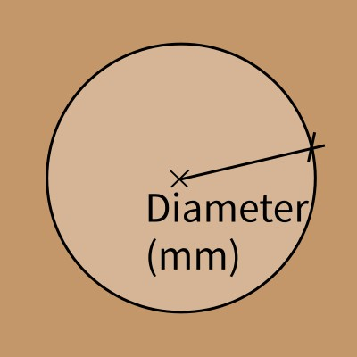

GRBL Circular Pocket G-Code Generator
Generates G-Code for a circular pocket using concentric circles (G3 arcs) at the desired depth. Zero point is the center (X0, Y0). Tool operates within the defined circle.

3D Toolpath Preview
The path will appear once you press the generate button.Order of operations:
- Zero the machine at the pocket center (X0, Y0).
- Tool will lift up and travel to the starting perimeter.
- Tool will plunge and cut concentric circles inward.
- Once finished it will lift up and return to center at safe height.
Input Parameters
|  | Pocket Diameter defines the total circular diameter of the pocket to be cut. The tool will stay within this boundary. |
 |
Total Depth (Z) is the final, negative Z-coordinate the tool will reach. This defines how deep the circular pocket will be. |
 |
Tool Diameter is the width of the end mill used for cutting. The circular toolpath calculation depends on this value. |
 |
Stepover is the radial distance between concentric circle passes, expressed as a percentage of the Tool Diameter. |
 |
Stepdown (Z) is the maximum depth the tool will cut in a single pass before moving to the next depth layer. |
 |
Feed Rate (XY) is the speed at which the tool moves horizontally during circular cutting operations. |
 |
Plunge Rate (Z) is the speed at which the tool moves vertically when entering the material for each depth layer. |
 |
Safety Z Height is a clear height above the material for safe rapid movements between operations. |
-
code Raw G-Code Preview